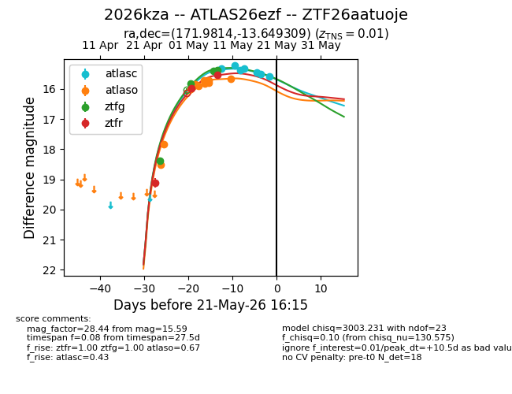
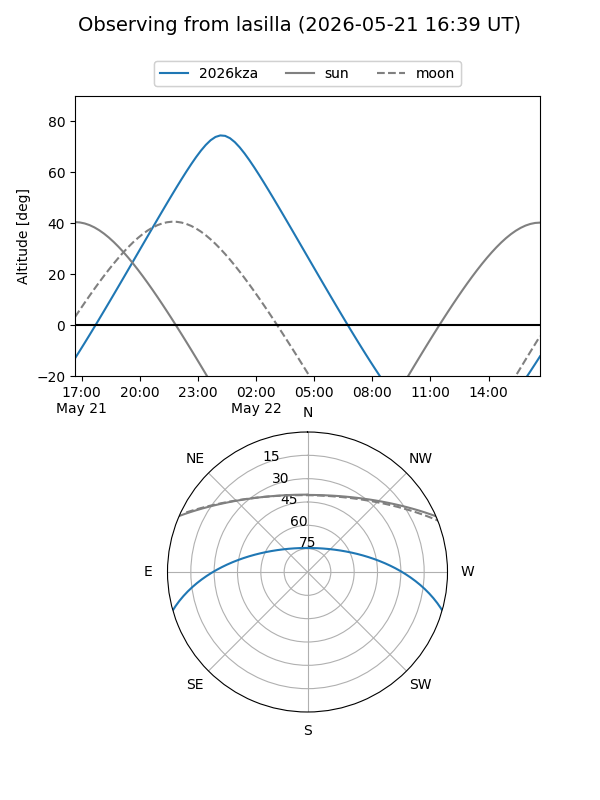
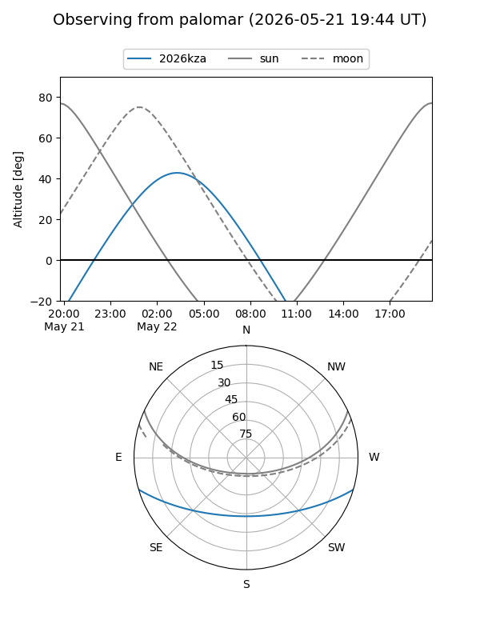
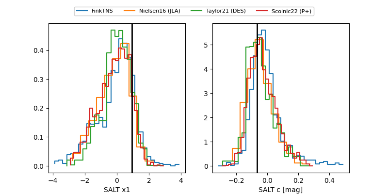

2026kza
Target 2026kza at 2026-05-21 16:17
Aliases and brokers:
lsst-FINK: link
lsst-Lasair: link
lsst-ALeRCE: link
ztf-FINK: link
ztf-Lasair: link
ztf-ALeRCE: link
TNS: link
YSE: link
alt names
ZTF26aatuoje (ztf,fink_ztf)
2026kza (tns,yse)
ATLAS26ezf (atlas)
Coordinates:
equatorial (ra, dec) = 171.9814,-13.64931
equatorial (HMS+DMS) = 11:27:55.53,-13:38:57.51
galactic (l, b) = (273.9031,+44.46435)
Flags:
TNS confirmed: SN Ia
TNS redshift: 0.01
confirmed ia: True
Photometry:
last atlasc=15.59, atlaso=15.67, ztfg=15.37, ztfr=15.53
8 atlasc, 10 atlaso, 4 ztfg, 3 ztfr detections
Lightcurve

Visibility


Additional plots
